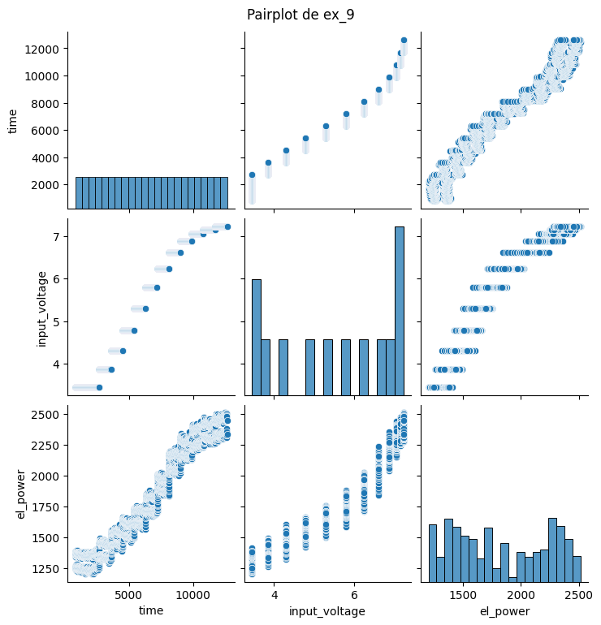
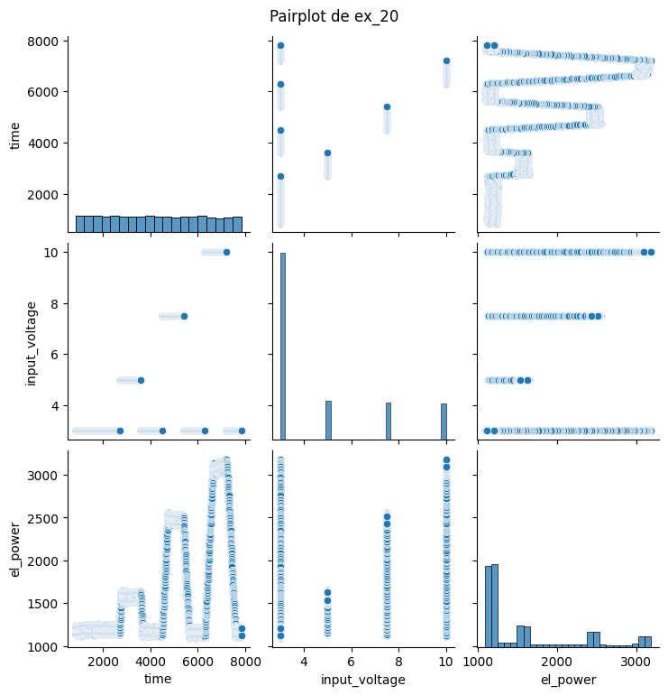
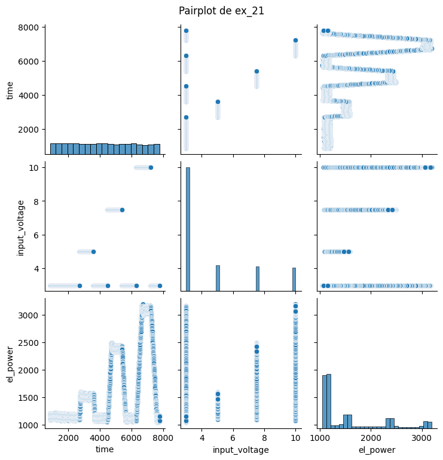
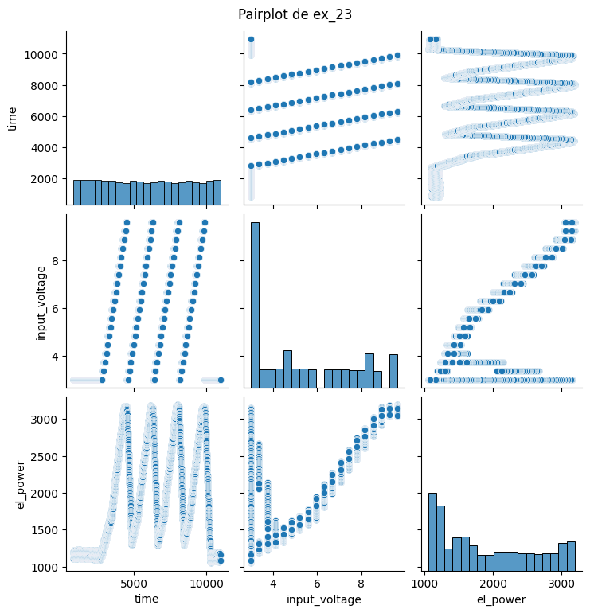
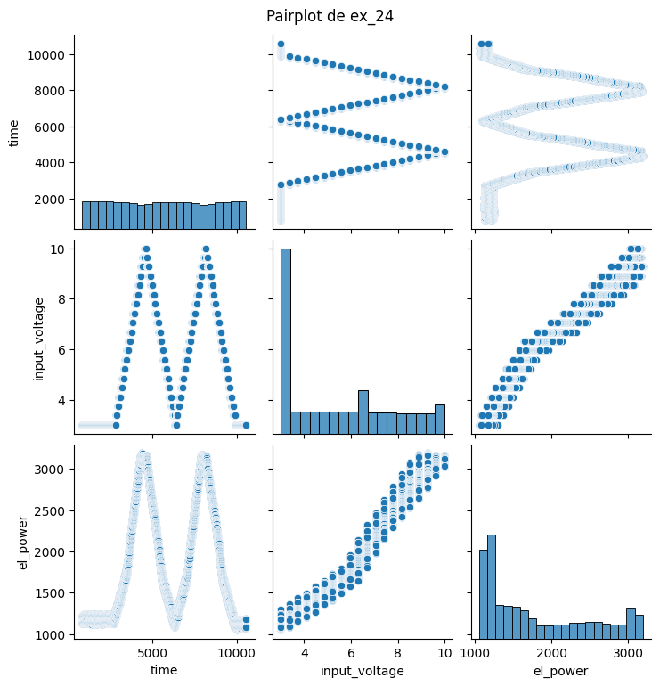
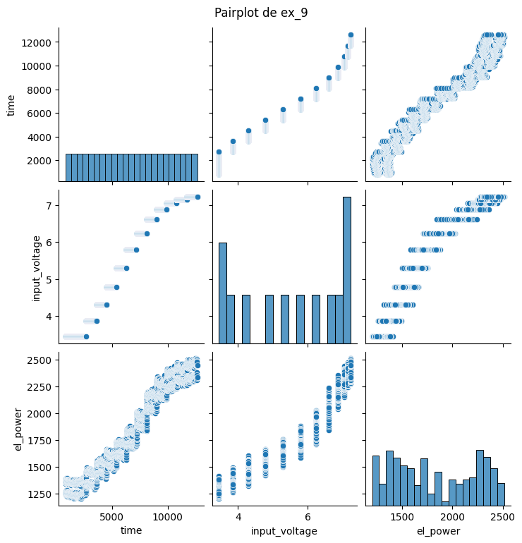
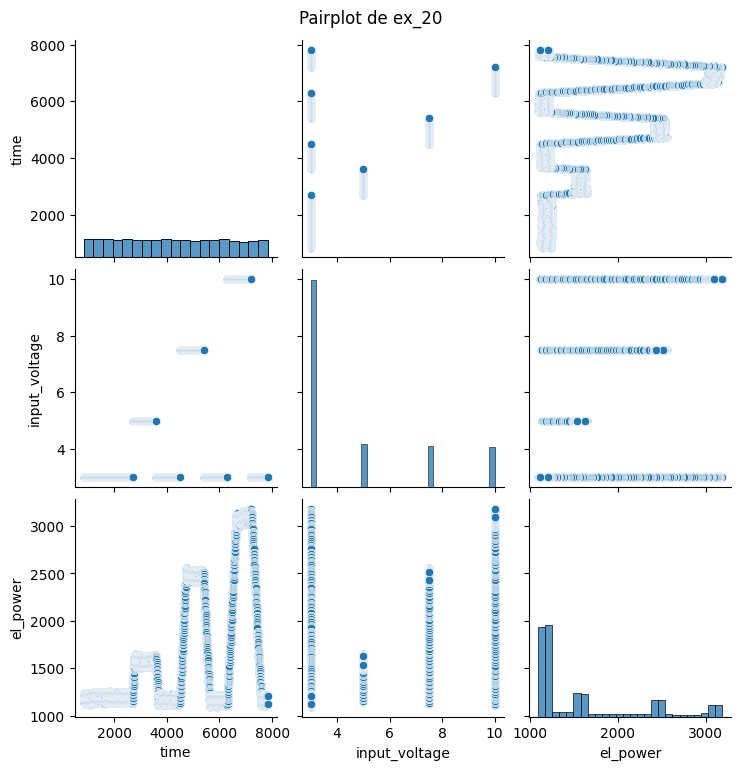
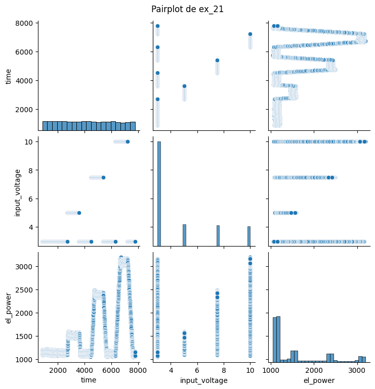
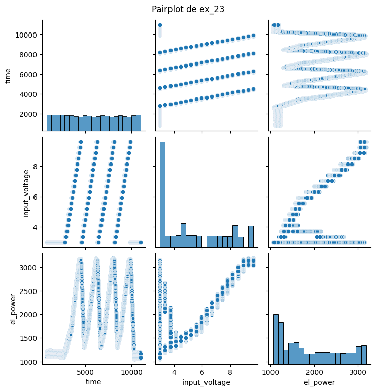
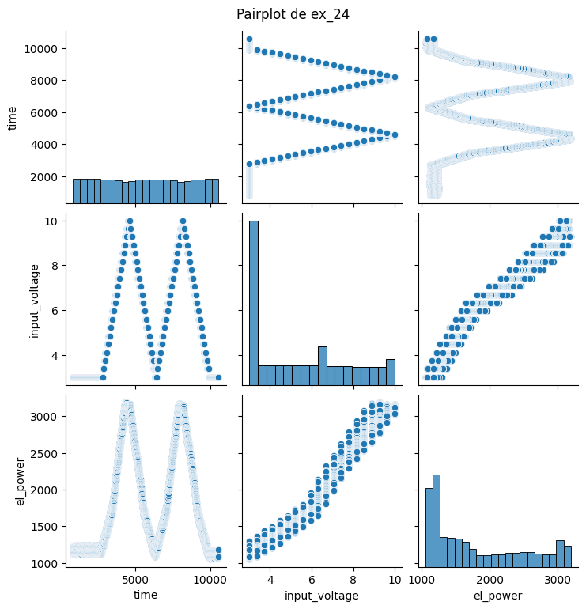

EDA#
Importación de los datos#
Se ha realizado la importación de los archivos CSV correspondientes a los experimentos. Los datos han sido organizados en variables dinámicas (df_) para facilitar el acceso en los análisis posteriores. Se validó la correcta carga mostrando las primeras filas de cada conjunto, organizadas en una cuadrícula para su inspección.
# Importar las librerías necesarias
import pandas as pd
import os
from IPython.display import display
# Ruta a la carpeta donde se encuentran los archivos de entrenamiento
train_folder = '/Users/josejavier-yenifer/Documents/Serie de Tiempo/Bono 1/train'
# Nombres de los archivos CSV
train_files = ['ex_1.csv', 'ex_9.csv', 'ex_20.csv', 'ex_21.csv', 'ex_23.csv', 'ex_24.csv']
# Cargar los archivos CSV en variables con prefijo 'df_' y nombre del archivo (sin .csv)
dfs = []
for file in train_files:
file_name = file.split('.')[0] # Eliminar la extensión .csv
file_path = os.path.join(train_folder, file)
# Crear una variable dinámica con el nombre df_<nombre_archivo>
globals()[f"df_{file_name}"] = pd.read_csv(file_path)
# Guardar el DataFrame para mostrar luego
dfs.append((file_name, globals()[f"df_{file_name}"]))
# Mostrar los DataFrames en una cuadrícula de 3 columnas por 2 filas
rows, cols = 2, 3
index = 0
for r in range(rows):
for c in range(cols):
if index < len(dfs):
file_name, df = dfs[index]
print(f"Archivo: {file_name}")
display(df.head())
print("\n" + "-"*50 + "\n")
index += 1
Archivo: ex_1
| time | input_voltage | el_power | |
|---|---|---|---|
| 0 | 810.07028 | 10 | 1228.791720 |
| 1 | 811.06938 | 10 | 1223.041745 |
| 2 | 812.06848 | 10 | 1244.960866 |
| 3 | 813.06758 | 10 | 1229.259058 |
| 4 | 814.06668 | 10 | 1248.117024 |
--------------------------------------------------
Archivo: ex_9
| time | input_voltage | el_power | |
|---|---|---|---|
| 0 | 818.84 | 3.445 | 1253.790314 |
| 1 | 819.84 | 3.445 | 1349.836854 |
| 2 | 820.84 | 3.445 | 1262.033813 |
| 3 | 821.84 | 3.445 | 1370.205819 |
| 4 | 822.84 | 3.445 | 1254.782490 |
--------------------------------------------------
Archivo: ex_20
| time | input_voltage | el_power | |
|---|---|---|---|
| 0 | 849.22 | 3.0 | 1238.511285 |
| 1 | 850.24 | 3.0 | 1149.563728 |
| 2 | 851.26 | 3.0 | 1226.959165 |
| 3 | 852.28 | 3.0 | 1158.086961 |
| 4 | 853.30 | 3.0 | 1230.435294 |
--------------------------------------------------
Archivo: ex_21
| time | input_voltage | el_power | |
|---|---|---|---|
| 0 | 847.72 | 3.0 | 1089.895066 |
| 1 | 848.74 | 3.0 | 1179.843179 |
| 2 | 849.78 | 3.0 | 1099.497553 |
| 3 | 850.80 | 3.0 | 1181.551142 |
| 4 | 851.82 | 3.0 | 1100.823819 |
--------------------------------------------------
Archivo: ex_23
| time | input_voltage | el_power | |
|---|---|---|---|
| 0 | 810.00 | 3.0 | 1102.949693 |
| 1 | 811.04 | 3.0 | 1199.403786 |
| 2 | 812.08 | 3.0 | 1113.199817 |
| 3 | 813.18 | 3.0 | 1200.377939 |
| 4 | 814.18 | 3.0 | 1105.465349 |
--------------------------------------------------
Archivo: ex_24
| time | input_voltage | el_power | |
|---|---|---|---|
| 0 | 811.04 | 3.0 | 1217.413110 |
| 1 | 812.04 | 3.0 | 1140.090013 |
| 2 | 813.06 | 3.0 | 1223.751987 |
| 3 | 814.10 | 3.0 | 1124.810110 |
| 4 | 815.12 | 3.0 | 1207.671543 |
--------------------------------------------------
Conteo de valores nulos#
Se muestra una tabla que cuenta la cantidad de valores nulos o faltantes en cada columna de los diferentes conjuntos de datos.
# Lista de DataFrames y nombres para iterar
dataframes = [df_ex_1, df_ex_9, df_ex_20, df_ex_21, df_ex_23, df_ex_24]
names = ['ex_1', 'ex_9', 'ex_20', 'ex_21', 'ex_23', 'ex_24']
# Almacenar los resultados de los datos nulos
null_counts = {}
# Iterar sobre los DataFrames para contar los valores nulos
for df, name in zip(dataframes, names):
null_counts[name] = df.isnull().sum()
# Convertir los resultados en un DataFrame
null_counts_df = pd.DataFrame(null_counts)
# Mostrar la tabla con los resultados
null_counts_df
| ex_1 | ex_9 | ex_20 | ex_21 | ex_23 | ex_24 | |
|---|---|---|---|---|---|---|
| time | 0 | 0 | 0 | 0 | 0 | 0 |
| input_voltage | 0 | 0 | 0 | 0 | 0 | 0 |
| el_power | 0 | 0 | 0 | 0 | 0 | 0 |
No hay datos faltantes en ninguna de las columnas (time, input_voltage, y el_power) para todos los conjuntos de datos. Esto indica que los datos están completos y no se requiere ningún tratamiento adicional para manejar valores ausentes antes del análisis.
import seaborn as sns
import matplotlib.pyplot as plt
# Lista de DataFrames y nombres para iterar
dataframes = [df_ex_1, df_ex_9, df_ex_20, df_ex_21, df_ex_23, df_ex_24]
names = ['ex_1', 'ex_9', 'ex_20', 'ex_21', 'ex_23', 'ex_24']
# Crear pairplot para cada conjunto de datos
for df, name in zip(dataframes, names):
sns.pairplot(df)
plt.suptitle(f'Pairplot de {name}', y=1.02) # Ajustar el título del gráfico
plt.show()
 









Estadísticas descriptivas#
Se presentan las estadísticas descriptivas de la columna el_power para cada conjunto de datos. Las métricas calculadas incluyen el número de observaciones, media, desviación estándar, valores mínimos y máximos, y los percentiles 25%, 50% y 75%.
import pandas as pd
# Generar estadísticas descriptivas para cada DataFrame
desc_ex_1 = df_ex_1['el_power'].describe()
desc_ex_9 = df_ex_9['el_power'].describe()
desc_ex_20 = df_ex_20['el_power'].describe()
desc_ex_21 = df_ex_21['el_power'].describe()
desc_ex_23 = df_ex_23['el_power'].describe()
desc_ex_24 = df_ex_24['el_power'].describe()
# Crear un DataFrame combinando los resultados, con las métricas como filas y los conjuntos de datos como columnas
desc_combined = pd.DataFrame({
'ex_1': desc_ex_1,
'ex_9': desc_ex_9,
'ex_20': desc_ex_20,
'ex_21': desc_ex_21,
'ex_23': desc_ex_23,
'ex_24': desc_ex_24
})
# Mostrar el DataFrame resultante
desc_combined
| ex_1 | ex_9 | ex_20 | ex_21 | ex_23 | ex_24 | |
|---|---|---|---|---|---|---|
| count | 9920.000000 | 11819.000000 | 6495.000000 | 6495.000000 | 9188.000000 | 9023.000000 |
| mean | 2162.427874 | 1828.548454 | 1623.263494 | 1576.460277 | 1899.231847 | 1805.375104 |
| std | 1009.468755 | 402.170208 | 632.985147 | 638.042444 | 693.044107 | 680.139456 |
| min | 932.837260 | 1204.205671 | 1097.030791 | 1045.541020 | 1053.218306 | 1054.175250 |
| 25% | 990.027512 | 1449.908790 | 1158.548696 | 1112.552610 | 1212.052789 | 1221.472869 |
| 50% | 2709.354147 | 1735.783127 | 1241.345876 | 1191.245597 | 1694.534657 | 1539.209904 |
| 75% | 3116.416457 | 2247.396267 | 1909.031616 | 1889.461847 | 2508.555589 | 2380.490784 |
| max | 3249.891217 | 2511.698262 | 3182.431061 | 3191.966802 | 3193.846351 | 3191.101416 |
Las estadísticas descriptivas de los conjuntos de datos revelan varias diferencias clave entre los experimentos:
ex_1tiene la mayor media de potencia eléctrica (2162 W), mientras queex_21tiene la más baja (1576 W), lo que indica una variabilidad significativa en los niveles de potencia entre los experimentos.La desviación estándar más alta se observa en
ex_1(1009 W), lo que sugiere una mayor dispersión de los datos en comparación con los otros conjuntos.Los valores de mínimo y máximo varían considerablemente entre los experimentos, con
ex_1yex_24mostrando los valores más altos en los extremos superiores.Los percentiles (25%, 50%, 75%) también reflejan diferentes patrones de distribución en los conjuntos de datos, destacando la concentración de la mayoría de las observaciones en distintos rangos de potencia.
Distribuciones individuales de la potencia eléctrica#
Se generan gráficos de densidad para la columna el_power de cada uno de los conjuntos de datos, organizados en una cuadrícula de 3 columnas y 2 filas. Esta visualización permite comparar fácilmente las distribuciones individuales y observar las diferencias en la potencia eléctrica entre los distintos experimentos.
import seaborn as sns
import matplotlib.pyplot as plt
# Configurar una cuadrícula de 3 columnas y 2 filas para los subplots
fig, axes = plt.subplots(2, 3, figsize=(15, 10))
# Lista de DataFrames y nombres para iterar
dataframes = [df_ex_1, df_ex_9, df_ex_20, df_ex_21, df_ex_23, df_ex_24]
names = ['ex_1', 'ex_9', 'ex_20', 'ex_21', 'ex_23', 'ex_24']
# Iterar sobre los DataFrames y los ejes de la cuadrícula
for i, (df, name) in enumerate(zip(dataframes, names)):
row = i // 3 # Determinar la fila del subplot
col = i % 3 # Determinar la columna del subplot
# Graficar en el subplot correspondiente
sns.kdeplot(df['el_power'], ax=axes[row, col], fill=True)
axes[row, col].set_title(f'Distribución de {name}')
axes[row, col].set_xlabel('Potencia Eléctrica (W)')
axes[row, col].set_ylabel('Densidad')
# Ajustar el diseño de los subplots
plt.tight_layout()
# Mostrar el gráfico
plt.show()
Las distribuciones de potencia eléctrica varían entre los experimentos:
ex_1 y ex_9 muestran distribuciones bimodales, con dos picos dominantes.
ex_20, ex_21, ex_23, y ex_24 presentan mayor dispersión con múltiples picos, sugiriendo variabilidad en las condiciones del experimento.
Los experimentos ex_21, ex_23, y ex_24 comparten un patrón con un pico cerca de los 1000 vatios.
QQ-plots de la potencia eléctrica#
Se generan gráficos QQ-plots para la columna el_power de cada uno de los conjuntos de datos. Estos gráficos permiten evaluar visualmente si los datos siguen una distribución normal, comparando los cuantiles observados con los cuantiles teóricos de una distribución normal.
from statsmodels.graphics.gofplots import qqplot
import matplotlib.pyplot as plt
# Configurar una cuadrícula de 3 columnas y 2 filas para los subplots
fig, axes = plt.subplots(2, 3, figsize=(15, 10))
# Lista de DataFrames y nombres para iterar
dataframes = [df_ex_1, df_ex_9, df_ex_20, df_ex_21, df_ex_23, df_ex_24]
names = ['ex_1', 'ex_9', 'ex_20', 'ex_21', 'ex_23', 'ex_24']
# Iterar sobre los DataFrames y los ejes de la cuadrícula
for i, (df, name) in enumerate(zip(dataframes, names)):
row = i // 3 # Determinar la fila del subplot
col = i % 3 # Determinar la columna del subplot
# Generar el QQ plot en el subplot correspondiente
qqplot(df['el_power'], line='s', ax=axes[row, col])
axes[row, col].set_title(f'QQ-plot de {name}')
# Ajustar el diseño de los subplots
plt.tight_layout()
# Mostrar el gráfico
plt.show()
Los QQ-plots muestran que las distribuciones de el_power en los distintos conjuntos de datos se desvían significativamente de una distribución normal. En general, los datos exhiben patrones escalonados y curvados, lo que indica la presencia de no normalidad. Los valores extremos en las colas de los gráficos sugieren que los datos incluyen outliers o efectos no lineales en las mediciones de potencia eléctrica.
Prueba de normalidad de Kolmogorov-Smirnov#
Se realiza la prueba de Kolmogorov-Smirnov para evaluar la normalidad de la distribución de el_power en cada conjunto de datos. Los resultados indican si podemos considerar que los datos siguen una distribución normal o si debemos rechazar esta hipótesis, basándonos en un nivel de significancia de 0.05
import numpy as np
from scipy import stats
import pandas as pd
# Lista de DataFrames y nombres para iterar
dataframes = [df_ex_1, df_ex_9, df_ex_20, df_ex_21, df_ex_23, df_ex_24]
names = ['ex_1', 'ex_9', 'ex_20', 'ex_21', 'ex_23', 'ex_24']
# Almacenar resultados de la prueba KS en un DataFrame
results = {'Dataset': [], 'Statistic': [], 'p-value': [], 'Normality': []}
alpha = 0.05 # Nivel de significancia
for df, name in zip(dataframes, names):
# Aplicar la prueba KS para cada conjunto de datos
stat, p = stats.kstest(df['el_power'], 'norm', args=(df['el_power'].mean(), df['el_power'].std()))
# Evaluar la normalidad
normality = 'No se rechaza H0' if p > alpha else 'Se rechaza H0'
# Guardar los resultados
results['Dataset'].append(name)
results['Statistic'].append(stat)
results['p-value'].append(p)
results['Normality'].append(normality)
# Convertir los resultados en un DataFrame
results_df = pd.DataFrame(results)
# Mostrar la tabla con los resultados
results_df
| Dataset | Statistic | p-value | Normality | |
|---|---|---|---|---|
| 0 | ex_1 | 0.283479 | 0.000000e+00 | Se rechaza H0 |
| 1 | ex_9 | 0.122652 | 2.051605e-155 | Se rechaza H0 |
| 2 | ex_20 | 0.265028 | 0.000000e+00 | Se rechaza H0 |
| 3 | ex_21 | 0.258664 | 0.000000e+00 | Se rechaza H0 |
| 4 | ex_23 | 0.121091 | 7.330340e-118 | Se rechaza H0 |
| 5 | ex_24 | 0.152485 | 1.194924e-183 | Se rechaza H0 |
La prueba de Kolmogorov-Smirnov aplicada a los conjuntos de datos revela que ninguno de ellos parece seguir una distribución normal. En todos los casos, el valor p es extremadamente bajo, lo que indica que se rechaza la hipótesis nula (H0) de normalidad
Análisis de correlación#
Se generan gráficos de correlación en forma de heatmap triangular para los conjuntos de datos. Cada gráfico muestra las relaciones entre las variables time, input_voltage, y el_power.
import seaborn as sns
import matplotlib.pyplot as plt
import numpy as np
# Lista de DataFrames y nombres para iterar
dataframes = [df_ex_1, df_ex_9, df_ex_20, df_ex_21, df_ex_23, df_ex_24]
names = ['ex_1', 'ex_9', 'ex_20', 'ex_21', 'ex_23', 'ex_24']
# Crear una cuadrícula de subplots para los heatmaps
fig, axes = plt.subplots(2, 3, figsize=(15, 10))
for i, (df, name) in enumerate(zip(dataframes, names)):
row = i // 3
col = i % 3
# Calcular la correlación
corr = df.corr()
# Crear una máscara para el triángulo superior
mask = np.triu(np.ones_like(corr, dtype=bool))
# Crear el heatmap con la máscara
sns.heatmap(corr, mask=mask, annot=True, cmap='coolwarm', ax=axes[row, col],
cbar_kws={"shrink": 0.5}, vmin=-1, vmax=1, square=True, linewidths=.5)
# Ajustar el título de cada subplot
axes[row, col].set_title(f'Correlación de {name}')
# Ajustar el diseño
plt.tight_layout()
plt.show()
Los heatmaps de correlación revelan:
En
ex_1,input_voltageyel_powertienen una correlación fuerte (0.89), mientras quetimetiene una relación negativa moderada conel_power.ex_9muestra una correlación extremadamente fuerte entre las tres variables, especialmente entreinput_voltageyel_power(0.97).Tanto en
ex_20como enex_21,input_voltageyel_powermantienen una correlación fuerte, con valores de 0.80 y 0.79, respectivamente.En
ex_23yex_24, la correlación entreinput_voltageyel_powersigue siendo alta, alcanzando 0.98 enex_24.
Gráficos de series de tiempo#
Se presentan las series de tiempo de la potencia eléctrica para cada conjunto de datos. Estos gráficos permiten visualizar cómo varía la potencia eléctrica en función del tiempo en los diferentes experimentos.
import matplotlib.pyplot as plt
# Lista de DataFrames y nombres para iterar
dataframes = [df_ex_1, df_ex_9, df_ex_20, df_ex_21, df_ex_23, df_ex_24]
names = ['ex_1', 'ex_9', 'ex_20', 'ex_21', 'ex_23', 'ex_24']
# Crear una cuadrícula de subplots
fig, axes = plt.subplots(2, 3, figsize=(18, 10))
# Iterar sobre los DataFrames y graficar la serie de tiempo en cada subplot
for i, (df, name) in enumerate(zip(dataframes, names)):
row = i // 3 # Determinar la fila del subplot
col = i % 3 # Determinar la columna del subplot
# Graficar la serie de tiempo en el subplot correspondiente
axes[row, col].plot(df['time'], df['el_power'], label='Potencia Eléctrica', color='b')
axes[row, col].set_title(f'Serie de Tiempo - {name}')
axes[row, col].set_xlabel('Tiempo')
axes[row, col].set_ylabel('Potencia Eléctrica (W)')
axes[row, col].legend()
# Ajustar el diseño de los subplots
plt.tight_layout()
# Mostrar el gráfico
plt.show()
Los gráficos de las series de tiempo para la potencia eléctrica en diversos experimentos revelan características distintivas:
ex_1,ex_20,ex_21, yex_23exhiben patrones cíclicos o escalonados con cambios abruptos de potencia, sugiriendo transiciones entre diferentes fases de los experimentos.ex_9muestra un incremento progresivo en la potencia eléctrica a lo largo del tiempo, indicativo de un comportamiento más gradual.ex_24presenta oscilaciones regulares similares aex_23, lo que sugiere ciclos consistentes en la generación de potencia.
Estos patrones indican variaciones significativas en el comportamiento de los experimentos, con la mayoría mostrando cambios rápidos en la potencia eléctrica, a excepción de ex_9, donde la potencia aumenta de manera más uniforme.